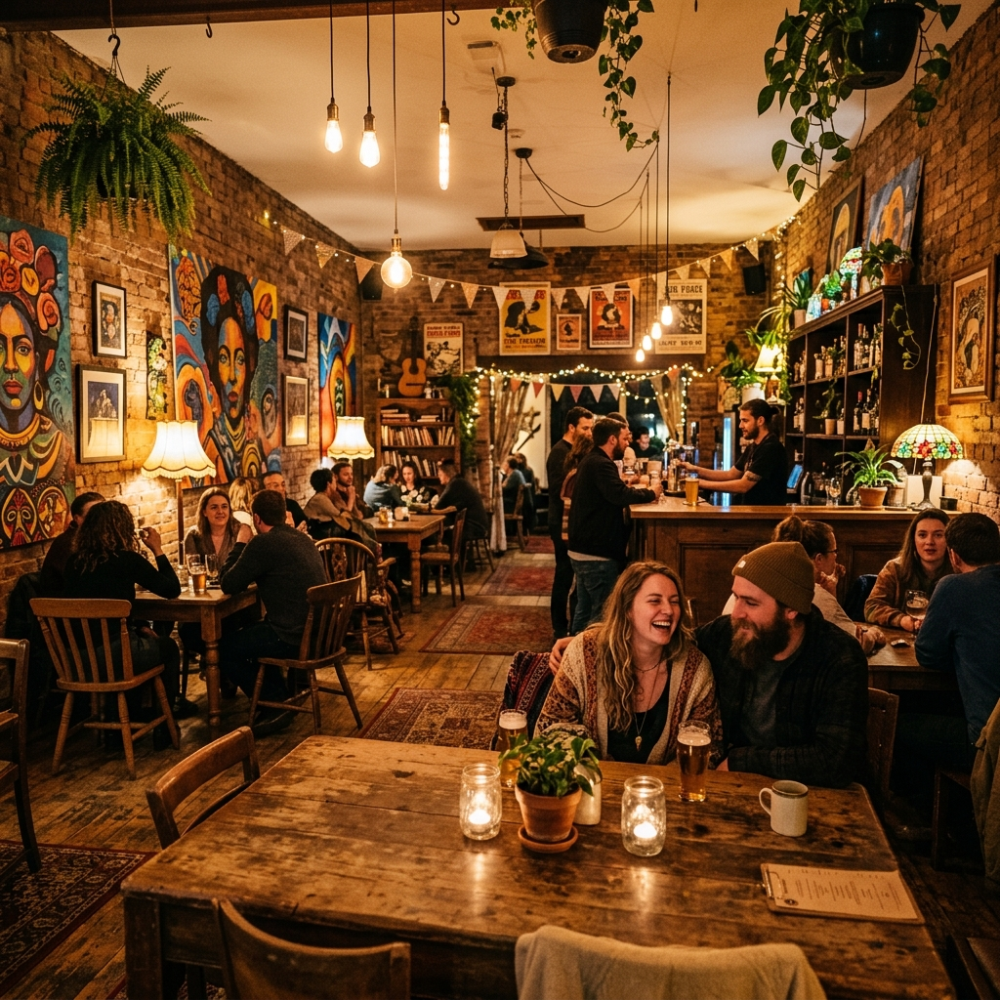
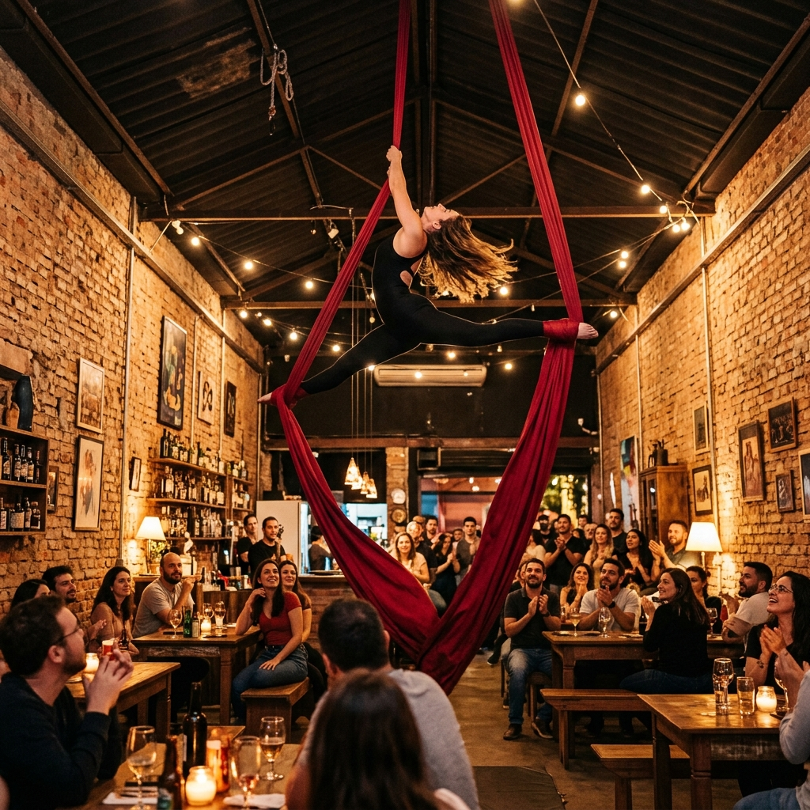
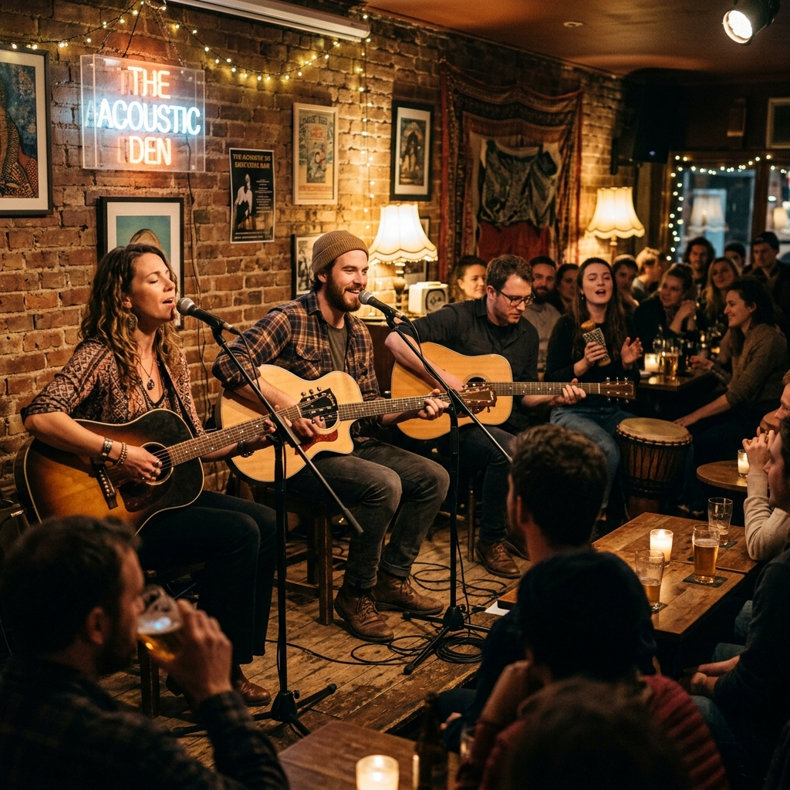
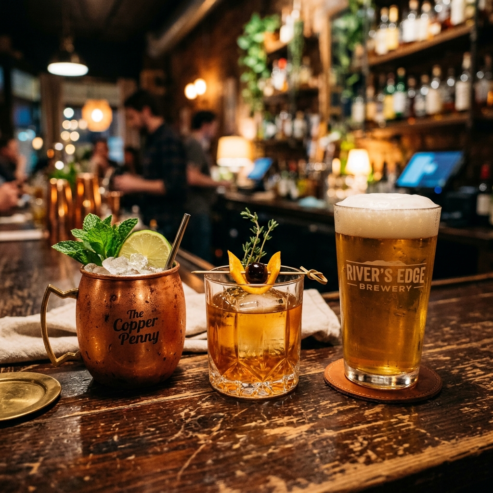
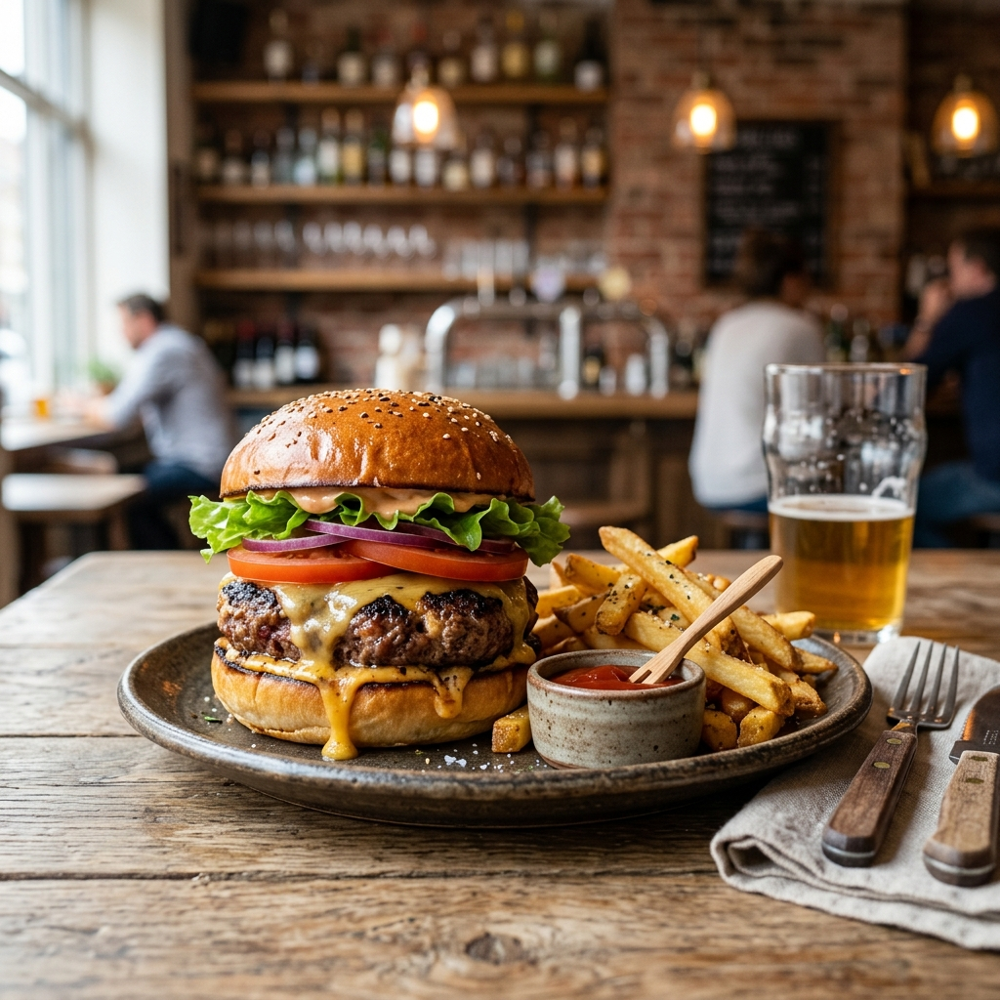
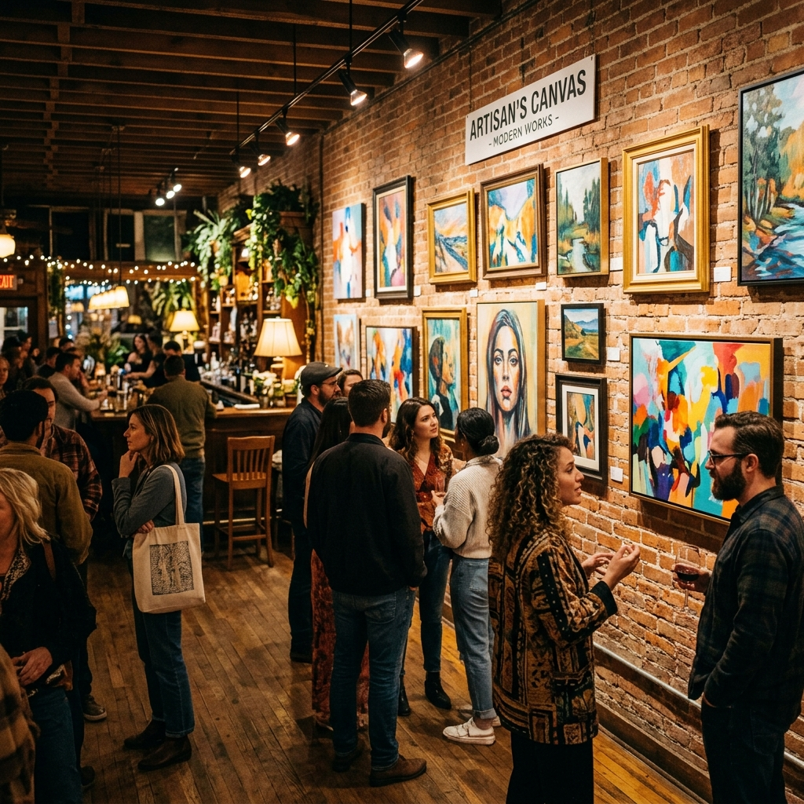

Arte · Food · Bar · Cultura Independente
A alternativa certa para o seu dia a dia. Experiências que fogem do óbvio, intervenções artísticas e gastronomia autoral em um espaço único.
Conecte-se no InstagramA Alternativa é um espaço vivo. Um ponto de encontro para quem respira arte, música, performance, expressão corporal e cultura urbana. Acreditamos na força da expressão independente e na criação de conexões reais.
Aqui acontecem eventos, encontros, apresentações de circo aéreo e exposições de artistas locais, harmonizados com um cardápio de comidas artesanais e drinks autorais pensados para surpreender.
Jam session musical com artistas locais, microfone aberto, performances livres e arte ao vivo nas paredes do espaço.
Entrada FrancaExposição de artistas independentes da zona oeste, feira de zines, música ambiente em vinil e chopp artesanal.
ExposiçãoUm vislumbre das experiências, arte e sabores que orbitam no nosso universo físico.






R. Bela Aurora, 215B
Campo Grande · Rio de Janeiro – RJ
CEP 23088-200
Próximo ao centro de Campo Grande, em um ambiente reservado e acolhedor.